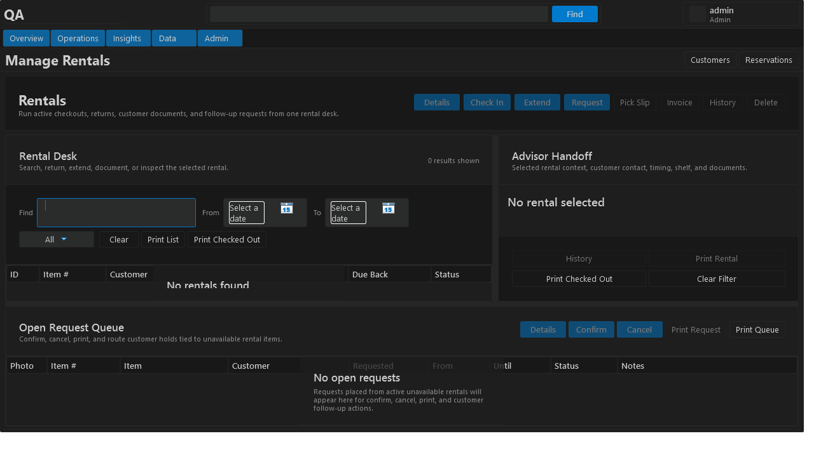

Resolution matrix
| Group | Folder | Size | Captures | Purpose |
|---|---|---|---|---|
| browser-viewports | 1280x720-cramped-fallback | 1280x720 | 1 | Absolute cramped fallback. |
Visual and workflow checklist
- Header, search, and signed-in user controls wrap without overlapping or clipping.
- The workflow guidance strip matches the active page and offers useful related jumps.
- Each capture shows a clear selected-row or empty-state path to the next action.
- Toolbar and context actions remain reachable on standard and fullscreen workstations.
- Text in grids, handoff panels, and buttons fits its container without hiding important values.
- Admin-only pages explain what the setting or permission change affects before saving.
- Technician and advisor flows can be completed from the current page or one visible drill-down.
browser-viewports / 1280x720-cramped-fallback
02-operations

browser-viewports\1280x720-cramped-fallback\02-operations\02-rentals.png